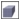

Быстрые ссылки на процедуры, описанные на этой странице:
• |
• |
• |
• |
• |
• |
• |
• |
Объектам можно придать трехмерный вид путем создания вытягиваний. Вытягивания можно создавать путем проецирования точек объекта и их последующего соединения для создания иллюзии трехмерной формы. CorelDRAW также позволяет применять векторное вытягивание для объекта в группе.
После создания вытягивания его атрибуты можно копировать или клонировать в выбранный объект. При клонировании или копировании атрибуты вытягивания одного объекта передаются другому объекту. Однако параметры клонированного вытягивания невозможно изменить независимо от шаблона.
Можно изменять форму вытягивания, вращая его и закругляя его углы.
CorelDRAW также позволяет удалять векторные вытягивания.
Придать трехмерный вид объекту можно еще одним способом — применить для вытягивания скошенный край. Скос создает иллюзию того, что вытянутые края объекта срезаны под углом. Для управления этим эффектом можно указать значения угла и глубины скоса.
Эффект скоса можно создать и без вытягивания объекта. Для получения дополнительных сведений см. раздел Создание эффектов скоса.
Заливки можно применять для всего вытянутого объекта или только для вытянутых поверхностей. Можно применить заливку для каждой поверхности по отдельности или создать сложную заливку, которая заполнит объект полностью, не оставляя разрывов в узоре или текстуре.
Слева направо: простая фигура; та же фигура, для которой применена заливка сплошным цветом с вытягиванием; та же фигура, для которой применена градиентная заливка с вытягиванием и поворот.
Эффект вытягивания можно усилить путем применения источников света. Можно добавить до трех источников света, освещающих вытянутый объект с разной интенсивностью. Когда источники света станут не нужны, их можно будет удалить.
Можно создать векторное вытягивание, линии которого сходятся в точке схода. Точку схода векторного вытягивания можно скопировать в другой объект, чтобы придать обоим объектам вид удаляющихся в одну точку.
Вытянутые объекты с одной точкой схода
Для двух вытянутых объектов можно также назначить разные точки схода.
Вытянутые объекты с разными точками схода
| Создание вытягивания |
1. |
Выберите объект с помощью инструмента Указатель |
2. |
В наборе инструментов выберите инструмент Вытягивание .
|
3. |
Выберите заготовку из списка Заготовки на панели свойств.
|
4. |
Выберите тип вытягивания в списке Тип вытягивания на панели
свойств.
|
5. |
Выделите объект.
|
6. |
Перетащите маркеры выделения объекта, чтобы задать направление и
глубину вытягивания.
|
Чтобы сбросить вытягивание, нажмите клавишу Esc, не отпуская кнопку мыши. |
| Копирование или клонирование вытягивания |
1. |
Выберите объект, который нужно вытянуть.
|
2. |
Выберите пункт Эффекты, а затем один из следующих пунктов.
|
• |
Копировать эффект |
• |
Клонировать эффект |
3. |
Щелкните объект, свойства вытягивания которого требуется скопировать.
|
Для копирования вытягивания можно также использовать
инструмент Пипетка атрибутов |
| Изменение формы векторного вытягивания |
| Удаление векторного вытягивания |
1. |
Выберите вытянутый объект.
|
2. |
Выберите пункт Эффекты |
Векторное вытягивание можно также удалить с помощью кнопки
Удалить вытягивание |
| Применение заливки для вытянутого объекта |
1. |
Выберите вытянутый объект с помощью инструмента Вытягивание .
|
2. |
Нажмите кнопку Цвет вытягивания на панели свойств.
|
3. |
Нажмите одну из следующих кнопок.
|
• |
Использовать заливку объекта : применение заливки объекта для
вытянутой области.
|
• |
Использовать сплошной цвет : применение сплошного цвета для
вытянутой области.
|
• |
Использовать добавление теней |
Для объекта можно применить неразрывный узор или заливку
текстурой, установив флажок Сложная заливка перед нажатием
кнопки Использовать заливку объекта.
|
| Применение скошенных краев для вытянутого объекта |
1. |
В наборе инструментов выберите инструмент Вытягивание .
|
2. |
Выберите вытянутый объект.
|
3. |
Нажмите кнопку Скосы при вытягивании на панели свойств.
|
4. |
Установите флажок Использовать скос.
|
5. |
Введите значение в поле Глубина скоса.
|
6. |
Введите значение в поле Угол скоса.
|
Глубину и угол скоса можно также задать в поле Интерактивное
отображение скоса под флажком Использовать скос.
|
Если установлен флажок Показывать только скос, то отображается
только скос, а вытянутый объект скрывается.
|
| Добавление освещения для вытянутого объекта |
1. |
Выберите вытянутый объект.
|
2. |
Нажмите кнопку Освещение вытягивания на панели свойств.
|
3. |
Нажмите одну из трех кнопок Источник света .
|
Источники света отображаются в виде пронумерованных кружков в окне предварительного просмотра. |
4. |
Перетащите пронумерованные кружки в окне Предварительный
просмотр освещения для размещения источников света.
|
Чтобы создать более реалистичные тени, установите флажок Полный набор цветов. |
| Изменение точки схода вытянутого объекта |
Copyright 2012 Corel Corporation. Все права защищены.